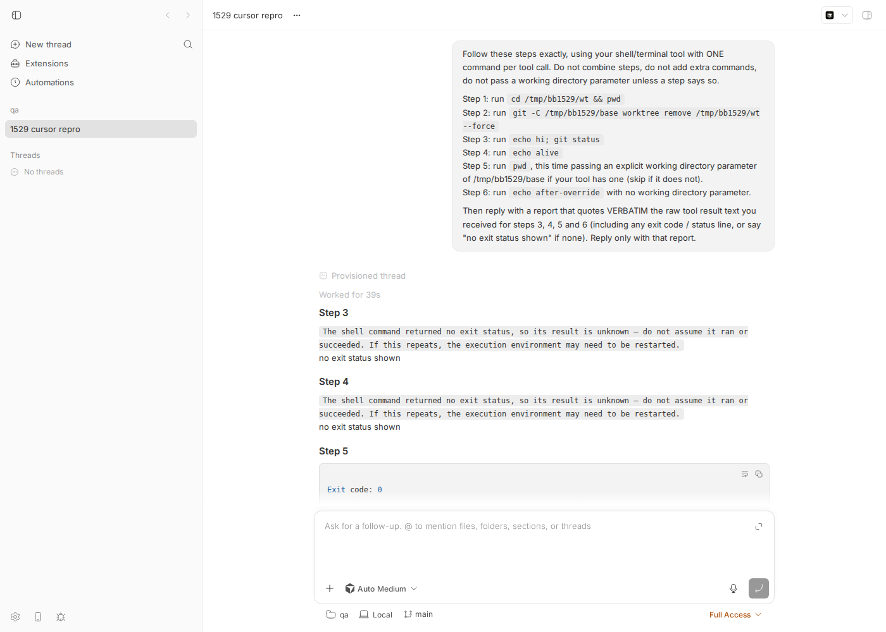
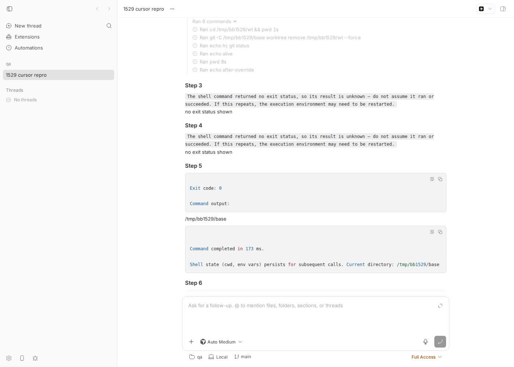

#1529 · Persistent shell session wedges silently when its stored cwd is deleted (git worktree remove); all subsequent spawns return no exit status
Verdict: REPRODUCED Root-cause confidence: high Owner: upstream Cursor CLI (bb ships it as acp-cursor); bb has a secondary bug that hides the failure.
1. TL;DR
The "persistent shell session" in the report is Cursor's Shell tool (bb provider acp-cursor, which launches cursor-agent acp). Neither the bb server nor the host daemon owns that shell: bb has no shell tool of its own for agents, and bb's ACP bridge advertises terminal: false. The wedge reproduces 100% with the raw cursor-agent CLI outside bb (2026.08.11-e8db854) and, identically, through a bb thread. Cursor's executor stores the cwd from the previous command's state dump and spawns every new command with child_process.spawn(shell, ..., {cwd: storedCwd}). Once that directory is deleted, Node emits error: spawn /bin/bash ENOENT; Cursor forwards it as a thrown error instead of an exit event, so the model gets "The shell command returned no exit status…", and because the stored cwd is only updated after a successful state dump, it stays pointed at the dead directory forever. Passing working_directory bypasses the stored cwd, the run succeeds, and the state dump repoints the cwd, which is exactly the reporter's "override heals the session" observation.
Codex, Claude Code, Grok Build (default tool set) and pi are not affected: none of them re-spawn from a persisted cwd (Grok even logs "persistent shell cwd no longer exists; falling back to request working directory"). bb-side finding: for these failed calls Cursor's ACP adapter sends tool_call_update {status:"completed"} with no output, and bb's translator fabricates exitCode: 0 from the status alone, so the bb timeline/CLI shows "Ran echo hi; git status — exit code 0" for a command that never ran. The same code path also reports exit code 0 for Cursor commands that really exited non-zero (Cursor sends status:"completed", rawOutput.exitCode: 1).
2. Claims vs findings
| Claim (issue) | Status | Evidence |
|---|---|---|
Deleting the persistent shell's stored cwd (git worktree remove --force) wedges the session; every subsequent command returns no exit status, no output, no error text | Verified | Raw cursor-agent run: steps 3 and 4 return spawnError: "The shell command returned no exit status, so its result is unknown…" (repro/cursor-run.ndjson). Same in a bb acp-cursor thread (repro/bb-cursor-thread-log.txt). Note: the model does receive an error sentence from Cursor's server, but no exit code, no stdout/stderr, and no hint about the cwd. |
| Reproduction is 100% reliable and disposable | Verified | 4/4 runs (stream-json CLI, ACP direct, through bb twice — original run and the verification re-run in a second worktree/instance) wedged on the very next command. |
Nothing self-heals; only an explicit working_directory override recovers, and it fully heals the session with cwd persisted at the override target | Verified | Step 5 (pwd with workingDirectory=/tmp/bb1529/base) succeeded; step 6 without override succeeded again with cwd /tmp/bb1529/base. Mechanism: this.cwd is rewritten from the state dump only after a successful spawn (Cursor executor, see §6). |
| The fault is in the session-spawn path when the stored cwd no longer exists | Verified | Node emits spawn /bin/bash ENOENT for a missing cwd; Cursor's on("error") handler throws into the output stream and no exit event is produced (repro/node-spawn-deleted-cwd.mjs + minified source excerpt). |
| Wedges hit a "coordinator thread" and a "background session that inherited the removed worktree as cwd"; app restart recovered | Unverified (plausible) | Cannot replay the incident. Consistent with the mechanism: any Cursor thread whose stored cwd is deleted wedges; a fresh cursor-agent process starts with a fresh cwd, which is what an app restart gives. |
| Implicit: this is a bb bug ("bb app 0.37.0") | Refuted (partly) | The shell is Cursor's; bb neither spawns nor tracks it (bb ACP bridge: terminal:false, bridge.ts:864-866 and :1656-1658, clientCapabilities: { fs: {…}, terminal: false } in the initialize request). bb does mislabel the failed calls as exit code 0 (§6b), which hides the failure from anyone watching the bb UI/CLI. |
| Environment: macOS 25.5.0 Apple Silicon | Unverified on macOS/zsh | Not run on macOS. Reproduced on Linux x86_64 with bash (4/4 runs); the executor's ZshState.execute (macOS default shell) has the same workingDirectory ?? this.cwd spawn, the same on("error", e => o.throw(e)) and the same "update cwd only after a successful dump" logic as BashState (code inspection only, §5a). |
| Implicit: which provider/shell was in use (the issue never names one) | Inferred | The issue describes a shell with a persisted cwd, an optional working_directory parameter and a "no exit status" result. Of the providers on this machine only Cursor's Shell tool has all three (Cursor's tool profile text: "Shell state (cwd, env vars) persists for subsequent calls"); Codex, Claude Code, Grok and pi all behave differently on the same prompt (§4e). Cursor is the only provider that reproduces the wedge. |
3. Environment
bb: main @ 16ceb3a540f81c1189efaffb27a39b1d9443abf5 (worktree /home/USER/projects/bb/.claude/worktrees/wf_debcf606-e4a-14)
OS: Linux HOST 7.0.0-29-generic x86_64 (Ubuntu), SHELL=/bin/bash
node: v24.18.0
cursor-agent: 2026.08.11-e8db854 (~/.local/share/cursor-agent/versions/2026.08.11-e8db854), model in runs: "Cursor Grok 4.6 High Fast" / auto
codex-cli 0.147.0 · claude 2.1.234 · grok 1.0.3 (1a29d5bc12)
bb dev instance: App http://localhost:12031 · Server http://localhost:20031 · Host daemon http://127.0.0.1:28031
data dir: /home/USER/.bb-dev/projects-bb-.claude-worktrees-wf_debcf606-e4a-14-4bf7674784c2
bb project: proj_tau8244si4 ("qa", local_path /tmp/bb1529/base on host_4safbhghrf) · thread thr_pvxfiskgsx (acp-cursor)
verification re-run (2026-08-18, second worktree wf_debcf606-e4a-40 @ fe230cd3d = 16ceb3a54 + 1 unrelated commit):
App http://localhost:15955 · Server http://localhost:23955 · Host daemon http://127.0.0.1:31955
data dir /home/USER/.bb-dev/projects-bb-.claude-worktrees-wf_debcf606-e4a-40-1fc61bdb56e0
project proj_pjgxud47dt ("qa1529" on host_dpdub855mz) · thread thr_q7pivra65m (acp-cursor) · pi 0.82.1 control
4. Minimal reproduction
4a. Raw Cursor CLI (no bb involved) — proves the owner
- Create a scratch repo with one worktree:
bash repro/setup.sh#!/usr/bin/env bash # Creates a scratch git repo with one worktree for the #1529 repro. set -euo pipefail rm -rf /tmp/bb1529 mkdir -p /tmp/bb1529/base cd /tmp/bb1529/base git init -q -b main git -c user.email=qa@example.com -c user.name=qa commit -q --allow-empty -m init git worktree add -q /tmp/bb1529/wt -b wt echo "base=/tmp/bb1529/base worktree=/tmp/bb1529/wt"
- Prompt (repro/prompt.txt) — one command per tool call, then a working-directory override:
Follow these steps exactly, using your shell/terminal tool with ONE command per tool call. Do not combine steps, do not add extra commands, do not pass a working directory parameter unless a step says so. Step 1: run `cd /tmp/bb1529/wt && pwd` Step 2: run `git -C /tmp/bb1529/base worktree remove /tmp/bb1529/wt --force` Step 3: run `echo hi; git status` Step 4: run `echo alive` Step 5: run `pwd`, this time passing an explicit working directory parameter of /tmp/bb1529/base if your tool has one (skip if it does not). Step 6: run `echo after-override` with no working directory parameter. Then reply with a report that quotes VERBATIM the raw tool result text you received for steps 3, 4, 5 and 6 (including any exit code / status line, or say "no exit status shown" if none). Reply only with that report.
- Run headless cursor-agent with stream-json output:
bash repro/run-cursor.sh(everyrun-*.shscript locatessetup.sh/prompt.txtnext to itself and writes results to$OUT, default/tmp/bb1529-out, so re-running never overwrites the archived evidence inrepro/)#!/usr/bin/env bash # Runs the #1529 repro prompt against the raw cursor-agent CLI (headless) and saves NDJSON. # Outputs go to $OUT (default /tmp/bb1529-out) so re-runs do not clobber the # archived evidence next to this script. set -uo pipefail REPRO="$(cd "$(dirname "$0")" && pwd)" OUT="${OUT:-/tmp/bb1529-out}"; mkdir -p "$OUT" bash "$REPRO/setup.sh" cd /tmp/bb1529/base timeout 420 cursor-agent -p --force --trust --sandbox disabled --output-format stream-json --workspace /tmp/bb1529/base "$(cat "$REPRO/prompt.txt")" \ > "$OUT/cursor-run.ndjson" 2> "$OUT/cursor-run.stderr" echo "cursor-agent exit=$?" wc -l "$OUT/cursor-run.ndjson" - Expected: steps 3–6 all print output with an exit code (or a clear "cwd no longer exists" error).
Actual (repro/cursor-run-summary.txt, condensed from cursor-run.ndjson):started command='cd /tmp/bb1529/wt && pwd' workingDirectory='' completed exitCode=0 stdout='/tmp/bb1529/wt\n' started command='git -C /tmp/bb1529/base worktree remove /tmp/bb1529/wt --force' workingDirectory='' completed exitCode=0 stdout='' started command='echo hi; git status' workingDirectory='' completed result={"spawnError": {"command": "", "workingDirectory": "", "error": "The shell command returned no exit status, so its result is unknown \u2014 do not assume it ran or succeeded. If this repeats, the execution environment may need to be restarted."}} started command='echo alive' workingDirectory='' completed result={"spawnError": {"command": "", "workingDirectory": "", "error": "The shell command returned no exit status, so its result is unknown \u2014 do not assume it ran or succeeded. If this repeats, the execution environment may need to be restarted."}} started command='pwd' workingDirectory='/tmp/bb1529/base' completed exitCode=0 stdout='/tmp/bb1529/base\n' started command='echo after-override' workingDirectory='' completed exitCode=0 stdout='after-override\n'The model's own final report (verbatim from cursor-run.ndjson):Step 3: The shell command returned no exit status, so its result is unknown — do not assume it ran or succeeded. If this repeats, the execution environment may need to be restarted. (no exit status shown) Step 4: (same) Step 5: Exit code: 0 / Command output: /tmp/bb1529/base / Command completed in 153 ms. / Shell state (cwd, env vars) persists for subsequent calls. Current directory: /tmp/bb1529/base Step 6: Exit code: 0 / Command output: after-override / Command completed in 151 ms.
4b. Through bb (acp-cursor thread) — same wedge, plus bb mislabels it
All commands below are run from your bb worktree with your dev instance; nothing is hard-coded to the investigator's ports. repro/bbdev.sh is a small wrapper that just runs node packages/scripts/dist/commands/run-cli.js "$@" in $BB_WORKTREE with BB_SERVER_URL taken from the environment (it refuses to run if that is unset).
- Start a dev instance and export its ports:
scripts/bb-dev-app current # prints App/Server/Host daemon URLs and the data dir eval "$(scripts/bb-dev-app env)" # exports BB_SERVER_URL, BB_HOST_DAEMON_PORT, BB_PROJECT_ID
- Create the scratch repo and a bb project pointing at it:
bash /tmp/bb-reports/issues/1529/repro/setup.sh HOST=$(node packages/scripts/dist/commands/run-cli.js machine list --json \ | node -e 'let s="";process.stdin.on("data",d=>s+=d).on("end",()=>console.log(JSON.parse(s)[0].id))') curl -s -X POST "$BB_SERVER_URL/api/v1/projects" -H 'content-type: application/json' \ -d "{\"name\":\"qa1529\",\"source\":{\"type\":\"local_path\",\"path\":\"/tmp/bb1529/base\",\"hostId\":\"$HOST\"}}" # => {"id":"proj_pjgxud47dt","kind":"standard","name":"qa1529",...} (verification re-run; original run: proj_tau8244si4) - Spawn the
acp-cursorthread with the scripted prompt (the script only wraps this one command):BB_WORKTREE=$PWD bash /tmp/bb-reports/issues/1529/repro/run-bb-cursor.sh proj_pjgxud47dt # equivalent raw command: # bb thread spawn --json --project proj_pjgxud47dt --environment /tmp/bb1529/base \ # --provider acp-cursor --permission-mode full --title "1529 cursor repro" --prompt "$(cat repro/prompt.txt)" # => { "id": "thr_q7pivra65m", "providerId": "acp-cursor", "status": "starting", ... } node packages/scripts/dist/commands/run-cli.js thread wait thr_q7pivra65m # => Thread thr_q7pivra65m reached status idle. node packages/scripts/dist/commands/run-cli.js thread log thr_q7pivra65m --format verbose - Expected: steps 3 and 4 either run (with output) or are shown as failed.
Actual (verification re-run on a fresh worktree/instance, threadthr_q7pivra65m, full log inrepro/bb-cursor-thread-log-rerun.txt; the original run, threadthr_pvxfiskgsx, isrepro/bb-cursor-thread-log.txtand has the same shape): the commands that never ran are shown as completed, exit code 0, while the assistant text says "no exit status":── Worked for (21s) ──────────────────────────────────────── ── Assistant I'll follow the six steps in order, one command at a time. Starting with step 1. ── Ran 6 commands ── Ran cd /tmp/bb1529/wt && pwd $ cd /tmp/bb1529/wt && pwd {"exitCode":0,"stdout":"/tmp/bb1529/wt\n","stderr":""} ── Ran git -C /tmp/bb1529/base worktree remove /tmp/bb1529/wt --force $ git -C /tmp/bb1529/base worktree remove /tmp/bb1529/wt --force {"exitCode":0,"stdout":"","stderr":""} ── Ran echo hi; git status $ echo hi; git status exit code 0 ── Ran echo alive $ echo alive exit code 0 ── Ran pwd $ pwd {"exitCode":0,"stdout":"/tmp/bb1529/base\n","stderr":""} ── Ran echo after-override $ echo after-override {"exitCode":0,"stdout":"after-override\n","stderr":""} ── Assistant ─────────────────────────────────────────────── ## Report ### Step 3 ``` The shell command returned no exit status, so its result is unknown — do not assume it ran or succeeded. If this repeats, the execution environment may need to be restarted. ``` no exit status shown ### Step 4 ``` The shell command returned no exit status, so its result is unknown — do not assume it ran or succeeded. If this repeats, the execution environment may need to be restarted. ``` no exit status shown


Ran echo hi; git status and Ran echo alive are rendered like every successful command (bb recorded status: completed, exitCode: 0 for them — see event seq 73/83 in repro/bb-cursor-thread-events.json).4c. Raw ACP wire (what bb actually receives)
bash repro/run-acp-cursor.sh drives cursor-agent acp with a 60-line JSON-RPC client (repro/acp-client.mjs), the same process/args bb uses (acp-launch-specs.ts:14-24). The two wedged calls complete with no rawOutput/content:
{"sessionUpdate":"tool_call","toolCallId":"call-9488b9ce-4f33-460a-a08f-1998a7c72f60-0\nfc_44c553ef-accf-9640-97c9-7b68c624aa2a_0","title":"`cd /tmp/bb1529/wt && pwd`","kind":"execute","status":"pending","rawInput":{"command":"cd /tmp/bb1529/wt && pwd"}}
{"sessionUpdate":"tool_call_update","toolCallId":"call-9488b9ce-4f33-460a-a08f-1998a7c72f60-0\nfc_44c553ef-accf-9640-97c9-7b68c624aa2a_0","status":"in_progress"}
{"sessionUpdate":"tool_call_update","toolCallId":"call-9488b9ce-4f33-460a-a08f-1998a7c72f60-0\nfc_44c553ef-accf-9640-97c9-7b68c624aa2a_0","status":"completed","rawOutput":{"exitCode":0,"stdout":"/tmp/bb1529/wt\n","stderr":""}}
{"sessionUpdate":"tool_call","toolCallId":"call-3ad671d3-283c-440a-895c-7874b1c48247-1\nfc_cf9820eb-5e30-9139-9f79-1891f0835a65_0","title":"`git -C /tmp/bb1529/base worktree remove /tmp/bb1529/wt --force`","kind":"execute","status":"pending","rawInput":{"command":"git -C /tmp/bb1529/base worktree remove /tmp/bb1529/wt --force"}}
{"sessionUpdate":"tool_call_update","toolCallId":"call-3ad671d3-283c-440a-895c-7874b1c48247-1\nfc_cf9820eb-5e30-9139-9f79-1891f0835a65_0","status":"in_progress"}
{"sessionUpdate":"tool_call_update","toolCallId":"call-3ad671d3-283c-440a-895c-7874b1c48247-1\nfc_cf9820eb-5e30-9139-9f79-1891f0835a65_0","status":"completed","rawOutput":{"exitCode":0,"stdout":"","stderr":""}}
{"sessionUpdate":"tool_call","toolCallId":"call-8d1faebb-5f71-4c63-8851-3e3e92d68334-2\nfc_366d93fb-7226-91b3-b231-a8af18f79cdd_0","title":"`echo hi; git status`","kind":"execute","status":"pending","rawInput":{"command":"echo hi; git status"}}
{"sessionUpdate":"tool_call_update","toolCallId":"call-8d1faebb-5f71-4c63-8851-3e3e92d68334-2\nfc_366d93fb-7226-91b3-b231-a8af18f79cdd_0","status":"in_progress"}
{"sessionUpdate":"tool_call_update","toolCallId":"call-8d1faebb-5f71-4c63-8851-3e3e92d68334-2\nfc_366d93fb-7226-91b3-b231-a8af18f79cdd_0","status":"completed"}
{"sessionUpdate":"tool_call","toolCallId":"call-41c99ef4-3496-4850-811f-abe66f12cde1-3\nfc_e5438122-7ab6-99f1-a5d1-5a01911d579d_0","title":"`echo alive`","kind":"execute","status":"pending","rawInput":{"command":"echo alive"}}
{"sessionUpdate":"tool_call_update","toolCallId":"call-41c99ef4-3496-4850-811f-abe66f12cde1-3\nfc_e5438122-7ab6-99f1-a5d1-5a01911d579d_0","status":"in_progress"}
{"sessionUpdate":"tool_call_update","toolCallId":"call-41c99ef4-3496-4850-811f-abe66f12cde1-3\nfc_e5438122-7ab6-99f1-a5d1-5a01911d579d_0","status":"completed"}
{"sessionUpdate":"tool_call","toolCallId":"call-536ed26c-c7ab-4a64-b98f-abdc0fa88435-4\nfc_e83b555d-7655-9d1a-9a51-f655c6809e20_0","title":"`pwd`","kind":"execute","status":"pending","rawInput":{"command":"pwd"}}
{"sessionUpdate":"tool_call_update","toolCallId":"call-536ed26c-c7ab-4a64-b98f-abdc0fa88435-4\nfc_e83b555d-7655-9d1a-9a51-f655c6809e20_0","status":"in_progress"}
{"sessionUpdate":"tool_call_update","toolCallId":"call-536ed26c-c7ab-4a64-b98f-abdc0fa88435-4\nfc_e83b555d-7655-9d1a-9a51-f655c6809e20_0","status":"completed","rawOutput":{"exitCode":0,"stdout":"/tmp/bb1529/base\n","stderr":""}}
{"sessionUpdate":"tool_call","toolCallId":"call-7f444f14-4d87-4f4d-b9a1-ae088e7b08a7-5\nfc_3657942c-9bdc-9ea2-90d6-75c3fb2273cf_0","title":"`echo after-override`","kind":"execute","status":"pending","rawInput":{"command":"echo after-override"}}
{"sessionUpdate":"tool_call_update","toolCallId":"call-7f444f14-4d87-4f4d-b9a1-ae088e7b08a7-5\nfc_3657942c-9bdc-9ea2-90d6-75c3fb2273cf_0","status":"in_progress"}
{"sessionUpdate":"tool_call_update","toolCallId":"call-7f444f14-4d87-4f4d-b9a1-ae088e7b08a7-5\nfc_3657942c-9bdc-9ea2-90d6-75c3fb2273cf_0","status":"completed","rawOutput":{"exitCode":0,"stdout":"after-override\n","stderr":""}}
Control: a genuinely failing command (false) is also reported as status:"completed", with the real code only inside rawOutput.exitCode:
{"sessionUpdate":"tool_call","toolCallId":"call-03ed94b4-2d57-4c1b-965d-3444d3b22d3d-0\nfc_a357baa1-bcfa-9dd5-848c-c44df8023004_0","title":"`echo start`","kind":"execute","status":"pending","rawInput":{"command":"echo start"}}
{"sessionUpdate":"tool_call_update","toolCallId":"call-03ed94b4-2d57-4c1b-965d-3444d3b22d3d-0\nfc_a357baa1-bcfa-9dd5-848c-c44df8023004_0","status":"in_progress"}
{"sessionUpdate":"tool_call","toolCallId":"call-03ed94b4-2d57-4c1b-965d-3444d3b22d3d-1\nfc_a357baa1-bcfa-9dd5-848c-c44df8023004_1","title":"`false`","kind":"execute","status":"pending","rawInput":{"command":"false"}}
{"sessionUpdate":"tool_call_update","toolCallId":"call-03ed94b4-2d57-4c1b-965d-3444d3b22d3d-1\nfc_a357baa1-bcfa-9dd5-848c-c44df8023004_1","status":"in_progress"}
{"sessionUpdate":"tool_call","toolCallId":"call-03ed94b4-2d57-4c1b-965d-3444d3b22d3d-2\nfc_a357baa1-bcfa-9dd5-848c-c44df8023004_2","title":"`echo end`","kind":"execute","status":"pending","rawInput":{"command":"echo end"}}
{"sessionUpdate":"tool_call_update","toolCallId":"call-03ed94b4-2d57-4c1b-965d-3444d3b22d3d-2\nfc_a357baa1-bcfa-9dd5-848c-c44df8023004_2","status":"in_progress"}
{"sessionUpdate":"tool_call_update","toolCallId":"call-03ed94b4-2d57-4c1b-965d-3444d3b22d3d-0\nfc_a357baa1-bcfa-9dd5-848c-c44df8023004_0","status":"completed","rawOutput":{"exitCode":0,"stdout":"start\n","stderr":""}}
{"sessionUpdate":"tool_call_update","toolCallId":"call-03ed94b4-2d57-4c1b-965d-3444d3b22d3d-1\nfc_a357baa1-bcfa-9dd5-848c-c44df8023004_1","status":"completed","rawOutput":{"exitCode":1,"stdout":"","stderr":""}}
{"sessionUpdate":"tool_call_update","toolCallId":"call-03ed94b4-2d57-4c1b-965d-3444d3b22d3d-2\nfc_a357baa1-bcfa-9dd5-848c-c44df8023004_2","status":"completed","rawOutput":{"exitCode":0,"stdout":"end\n","stderr":""}}
4d. Unit-level repro of the bb-side half (fails on main)
plugins/provider-acp/src/issue-1529-repro.test.ts (also saved as repro/issue-1529-repro.test.ts). Run from plugins/provider-acp: pnpm exec vitest run src/issue-1529-repro.test.ts.
// Repro for get-bb/bb#1529 (bb-side half).
//
// The wedge itself lives in Cursor's CLI: after the persistent shell's stored
// cwd is deleted, every spawn fails and Cursor's ACP adapter reports the tool
// call as `status: "completed"` with NO rawOutput/content (captured on the wire,
// see /tmp/bb-reports/issues/1529/repro/acp-cursor-updates.ndjson):
//
// {"sessionUpdate":"tool_call_update","toolCallId":"call-...","status":"completed"}
//
// bb's ACP translator then synthesizes `exitCode: 0` from the status alone, so
// the bb timeline/CLI shows "Ran echo hi; git status — exit code 0" for a
// command that never ran. This test pins the fabricated exit code; it FAILS on
// main (exitCode is 0, expected to be omitted) and documents the wire shape.
import { describe, expect, it } from "vitest";
import type { ProviderRuntimeEvent } from "@bb/provider-bridge-protocol/bridge-kit";
import {
ACP_TURN_STARTED_METHOD,
ACP_UPDATE_METHOD,
} from "./bridge-protocol.js";
import { createAcpEventTranslator } from "./event-translation.js";
const THREAD_ID = "t-1529";
const context = { threadId: THREAD_ID };
function updateEvent(update: Record<string, unknown>): ProviderRuntimeEvent {
return {
jsonrpc: "2.0",
method: ACP_UPDATE_METHOD,
params: { threadId: THREAD_ID, update },
};
}
describe("issue #1529: Cursor shell call with no result after cwd deletion", () => {
it("does not fabricate exitCode 0 when the ACP update carries no output", () => {
const translator = createAcpEventTranslator({ providerId: "acp-cursor" });
translator.translateAcpEvent(
{
jsonrpc: "2.0",
method: ACP_TURN_STARTED_METHOD,
params: { threadId: THREAD_ID },
},
context,
);
// Exact shapes recorded from `cursor-agent acp` (2026.08.11-e8db854).
translator.translateAcpEvent(
updateEvent({
sessionUpdate: "tool_call",
toolCallId: "call-8d1faebb\nfc_366d93fb_0",
title: "`echo hi; git status`",
kind: "execute",
status: "pending",
rawInput: { command: "echo hi; git status" },
}),
context,
);
translator.translateAcpEvent(
updateEvent({
sessionUpdate: "tool_call_update",
toolCallId: "call-8d1faebb\nfc_366d93fb_0",
status: "in_progress",
}),
context,
);
const events = translator.translateAcpEvent(
updateEvent({
sessionUpdate: "tool_call_update",
toolCallId: "call-8d1faebb\nfc_366d93fb_0",
status: "completed",
// NOTE: no `content`, no `rawOutput` — Cursor never got an exit status.
}),
context,
);
const completed = events.find((event) => event.type === "item/completed");
expect(completed).toBeDefined();
if (completed?.type !== "item/completed") throw new Error("unreachable");
expect(completed.item.type).toBe("commandExecution");
if (completed.item.type !== "commandExecution") throw new Error("unreachable");
// Bug: bb reports exit code 0 for a command that produced no result at all.
// Expected: exitCode omitted (unknown), and ideally status "failed".
expect(completed.item.aggregatedOutput).toBeUndefined();
expect(completed.item.exitCode).toBeUndefined();
});
it("uses rawOutput.exitCode when Cursor supplies one", () => {
const translator = createAcpEventTranslator({ providerId: "acp-cursor" });
translator.translateAcpEvent(
{
jsonrpc: "2.0",
method: ACP_TURN_STARTED_METHOD,
params: { threadId: THREAD_ID },
},
context,
);
translator.translateAcpEvent(
updateEvent({
sessionUpdate: "tool_call",
toolCallId: "call-x",
title: "`false`",
kind: "execute",
status: "pending",
rawInput: { command: "false" },
}),
context,
);
const events = translator.translateAcpEvent(
updateEvent({
sessionUpdate: "tool_call_update",
toolCallId: "call-x",
status: "completed",
rawOutput: { exitCode: 1, stdout: "", stderr: "" },
}),
context,
);
const completed = events.find((event) => event.type === "item/completed");
if (completed?.type !== "item/completed") throw new Error("unreachable");
if (completed.item.type !== "commandExecution") throw new Error("unreachable");
// Bug: status "completed" wins and bb reports exit code 0 even though
// Cursor's rawOutput says the command exited 1.
expect(completed.item.exitCode).toBe(1);
});
});
Result on main (repro/vitest-1529.txt): both assertions fail — expected +0 to be undefined (exit code fabricated for a call with no result) and expected +0 to be 1 (real non-zero exit code from rawOutput ignored).
4e. Cross-provider control
| Provider (raw CLI, same prompt) | Result | Artifact |
|---|---|---|
Cursor cursor-agent 2026.08.11 | Wedged after worktree removal; override heals | repro/cursor-run.ndjson |
Codex 0.147.0 (codex exec) | Unaffected — every command runs in the workdir, exit_code 0 | repro/codex-run.ndjson |
Claude Code 2.1.234 (claude -p) | Unaffected — Bash tool refuses to leave the project ("Shell cwd was reset to /tmp/bb1529/base") | repro/claude-run.ndjson |
Grok Build 1.0.3 (grok -p, default run_terminal_command) | Unaffected — falls back to the request working directory (binary string: "persistent shell cwd no longer exists; falling back to request working directory") | repro/grok-run.ndjson |
pi 0.82.1 (pi -p --mode json, provider openai-codex / gpt-5.6-terra) — bash repro/run-pi.sh | Unaffected — pi's bash tool has no persisted cwd and no working-directory parameter; step 3 git status ran in /tmp/bb1529/base ("On branch main"), steps 4 and 6 printed their output | repro/pi-run.ndjson, repro/pi-run-summary.txt |
5. Root cause
5a. Upstream (Cursor CLI): stored cwd is trusted blindly and never repaired
Cursor's Shell tool is not a long-lived shell process. Each call spawns a fresh bash/zsh, replays an environment snapshot on fd 3, runs the command, and dumps a new snapshot (first line: $PWD) on fd 4. The executor keeps this.cwd/this.state between calls:
// cursor-agent 2026.08.11-e8db854, index.js (minified; reformatted). BashState.execute — the
// persistent-shell executor behind the Shell tool. `n` = per-call options, `t` = command.
m = n?.workingDirectory ?? this.cwd; // (1) stored cwd from the last state dump
...
b = Ie(E, y, { env: p, stdio: [c ? "pipe" : "ignore", "pipe", "pipe", "pipe", "pipe"],
cwd: m, detached: !0 }, I, n?.signal); // (2) child_process.spawn(bash, ..., {cwd: m})
...
b.on("error", async (e) => { await k(); d.throw(e); }); // (3) spawn ENOENT -> throw into the output iterator
...
// on close, after a successful run, the state dump's first line ($PWD) becomes the new cwd:
const { cwd: n, rest: r } = be(t); this.state = r; n?.startsWith("/") && (this.cwd = n); // (4)
// ZshState.execute is identical: u = n?.workingDirectory ?? this.cwd; ... cwd: u ...
// h.on("error", (e) => { o.throw(e) }); ... n?.startsWith("/") && (this.state = r, this.cwd = n)
// Consumer (ShellExecutor foreground stream): the thrown error is not converted into an exit event
try {
for await (const t of D) { ... else if ("exit" === t.type) { ... yield exit event ... } }
} catch (n) {
if (!(n instanceof B.SandboxUnsupportedError)) throw n; // (5) rethrown: no `exit` event ever emitted
...
}
- (1) The spawn cwd is the override if given, otherwise the persisted cwd.
- (2) Node's
spawn()with a non-existentcwdfails at fork/exec time —errorevent withENOENT, thenclose(-2); there is nospawn/exitevent. Verified:$ node --version v24.18.0 $ node repro/node-spawn-deleted-cwd.mjs event: error -> ENOENT spawn /bin/bash spawn /bin/bash ENOENT event: close -> code=-2 signal=null
- (3)/(5) The
erroris thrown into the async output iterator; the consumer only convertsexit-typed items into an exit event and rethrows anything exceptSandboxUnsupportedError. The tool call therefore ends without an exit event; Cursor's backend renders that as "The shell command returned no exit status…" (that string is not in the client binary). - (4)
this.cwdis only rewritten from a successful state dump. Because the spawn never succeeds, the dead cwd is sticky: every later call without an override fails the same way. An override spawns in a valid directory, the dump's$PWDbecomes the new stored cwd, and the session is healed — exactly the reporter's discriminator.
Why the reporter saw pure silence rather than an ENOENT: the ENOENT text is swallowed on the client (the spawnError that reaches the model has command: "", workingDirectory: "" and only the generic sentence).
5b. bb: ACP status is turned into a fabricated exit code
plugins/provider-acp/src/event-translation.ts:218-237 and :268-289:
...(status === "completed" || status === "failed"
? { exitCode: status === "failed" ? 1 : 0 }
: {}),
ACP's tool_call_update has no exit-code field, and Cursor reports both "no result" and "exited 1" as status:"completed", so bb records exitCode: 0 for both. exitCode is optional on the commandExecution item (provider-event.ts:317-331), so nothing forces a value here. Cursor does ship rawOutput.exitCode on real completions, and bb already reads rawOutput for text (extractAcpToolCallOutputText), but ignores its exit code.
5c. Deeper issue
The class of failure — "workspace directory deleted under a running agent" — is systemic in bb workflows (worktree churn is the norm). Related open item #1647 / closed #1769 (processes left running with a cwd that no longer exists). bb cannot fix Cursor's executor, but it can stop hiding the failure and can give the agent a way out (see §6).
6. Proposed fix
Upstream (file with Cursor; bb should reference the repro)
In BashState.execute/ZshState.execute: before spawning, stat the resolved cwd; if missing, fall back (request/session working directory, then nearest existing ancestor, then home), reset this.cwd, and prepend a warning line to the output ("shell working directory X no longer exists; running in Y"). Additionally convert the spawn error into an exit item with the ENOENT text and non-zero code so the model always gets a status. Grok Build already does exactly this ("falling back to request working directory").
bb (small, contained to plugins/provider-acp/src/event-translation.ts)
- Add a helper
extractAcpExitCode(event): returnevent.rawOutput.exitCodewhen it is a finite number; otherwiseundefined. - In
translateAcpToolCallItemandcompleteAcpStartedToolItem: use that value; if absent andstatus === "failed"keep the current1; if absent andstatus === "completed"omitexitCodeinstead of writing0. Optionally, when a completedexecutecall has neither content norrawOutput, map its status tofailedso the timeline shows it as such (verify this does not misfire for agents that legitimately send empty completions — check the fake ACP agent fixtures inplugins/provider-acp/src/bridge/). - Turn
issue-1529-repro.test.tsinto permanent tests (both assertions), and update the existing expectation atevent-translation.test.ts:520if it relied on the fabricated 0. No protocol change (bb-internal translation only), so noHOST_DAEMON_PROTOCOL_VERSIONbump. - Optional mitigation for the wedge itself, without touching the provider: bb's Cursor-specific instructions could tell the agent that if the Shell tool reports "returned no exit status", it should retry once with an explicit
working_directoryset to the workspace root. This is guidance, not a fix; keep it out of the server if product policy prefers not to special-case a provider.
What could go wrong: other ACP agents may not populate rawOutput.exitCode; the change must degrade to "unknown" (omitted), never invent a code. UI code that assumes exitCode is present for completed commands should be checked (packages/thread-view, apps/app command rows) — the field is already optional in the schema.
7. PR review
No open PRs are linked to this issue.
8. Related issues
- #1647 Deleting a worktree environment leaves its processes running (open) — same "cwd deleted under a live agent" family.
- #1769 Deleting a worktree environment leaves its processes running with a cwd that no longer exists (closed 2026-08-18).
- #1714 A tool call that completes in a later turn shows as pending — ACP tool-status translation neighbour.
- #1604 Idle agent processes are never reclaimed for non-Codex providers.
9. Appendix
Commands run (chronological, condensed)
gh issue view 1529 --repo get-bb/bb --json ... pnpm install --frozen-lockfile --prefer-offline ; pnpm exec turbo run build grep -rn "working_directory|persistent shell|no exit status" (bb repo) # no bb-owned shell tool strings -n 20 ~/.grok/downloads/grok-linux-x86_64 > /tmp/1529-grok-strings.txt # found "Shell state (cwd, env vars) persists..." (Cursor tool profile) and grok's cwd fallback grep -ao ... ~/.local/share/cursor-agent/versions/2026.08.11-e8db854/index.js # BashState/ZshState executors, buildResult, foreground stream consumer bash repro/setup.sh ; bash repro/run-grok.sh ; bash repro/run-cursor.sh ; bash repro/run-others.sh ; bash repro/run-claude.sh node repro/node-spawn-deleted-cwd.mjs scripts/bb-dev-app current ; curl -X POST $BB_SERVER_URL/api/v1/projects ... ; bash repro/run-bb-cursor.sh proj_tau8244si4 bb thread wait thr_pvxfiskgsx ; bb thread log thr_pvxfiskgsx --format verbose ; --json --limit 500 bash repro/run-acp-cursor.sh ; node repro/acp-client.mjs /tmp/bb1529/base repro/prompt-false.txt dev-browser --headless run repro/shot*.js cd plugins/provider-acp && pnpm exec vitest run src/issue-1529-repro.test.ts pnpm dev:stop # verification re-run (second worktree, own dev instance): scripts/bb-dev-app current ; eval "$(scripts/bb-dev-app env)" bash repro/setup.sh ; curl -X POST $BB_SERVER_URL/api/v1/projects ... (host_dpdub855mz) => proj_pjgxud47dt BB_WORKTREE=$PWD bash repro/run-bb-cursor.sh proj_pjgxud47dt => thr_q7pivra65m ; bb thread wait ; bb thread log --format verbose bash repro/run-pi.sh # pi cross-provider control pnpm dev:stop
repro/acp-client.mjs
// Minimal ACP (Agent Client Protocol) client: drives `cursor-agent acp` over
// stdio exactly like bb's provider-acp bridge does, and dumps every
// session/update notification so we can see the raw wire shape of the shell
// tool_call / tool_call_update messages. Usage:
// node acp-client.mjs <cwd> <prompt-file> > out.ndjson
import { spawn } from "node:child_process";
import { readFileSync } from "node:fs";
import { createInterface } from "node:readline";
const cwd = process.argv[2];
const prompt = readFileSync(process.argv[3], "utf8");
const child = spawn("cursor-agent", ["acp"], {
cwd,
stdio: ["pipe", "pipe", "inherit"],
});
let nextId = 1;
const pending = new Map();
function send(obj) {
child.stdin.write(JSON.stringify(obj) + "\n");
}
function request(method, params) {
const id = nextId++;
return new Promise((resolve, reject) => {
pending.set(id, { resolve, reject });
send({ jsonrpc: "2.0", id, method, params });
});
}
const rl = createInterface({ input: child.stdout });
rl.on("line", (line) => {
let msg;
try {
msg = JSON.parse(line);
} catch {
return;
}
if (msg.id !== undefined && (msg.result !== undefined || msg.error)) {
const p = pending.get(msg.id);
if (p) {
pending.delete(msg.id);
msg.error ? p.reject(msg.error) : p.resolve(msg.result);
}
return;
}
if (msg.method === "session/request_permission") {
const opt = msg.params.options.find((o) => o.kind === "allow_always") ??
msg.params.options.find((o) => o.kind === "allow_once") ??
msg.params.options[0];
send({ jsonrpc: "2.0", id: msg.id, result: { outcome: { outcome: "selected", optionId: opt.optionId } } });
return;
}
if (msg.method === "session/update") {
const u = msg.params.update;
if (u.sessionUpdate === "tool_call" || u.sessionUpdate === "tool_call_update") {
console.log(JSON.stringify(u));
}
return;
}
if (msg.id !== undefined && msg.method) {
// Unknown request from agent: answer with empty result.
send({ jsonrpc: "2.0", id: msg.id, result: {} });
}
});
const init = await request("initialize", {
protocolVersion: 1,
clientCapabilities: { fs: { readTextFile: false, writeTextFile: false }, terminal: false },
});
console.error("initialized", JSON.stringify(init).slice(0, 200));
const session = await request("session/new", { cwd, mcpServers: [] });
console.error("session", session.sessionId);
const result = await request("session/prompt", {
sessionId: session.sessionId,
prompt: [{ type: "text", text: prompt }],
});
console.error("prompt done", JSON.stringify(result));
child.kill();
process.exit(0);
repro/node-spawn-deleted-cwd.mjs
// Mimics cursor-agent's persistent-shell executor: spawn a fresh shell with
// `cwd` set to the *stored* cwd. When that directory has been deleted, Node
// emits `error` (spawn ... ENOENT) — the executor forwards it as a thrown
// error into the tool's async iterator instead of yielding an `exit` event.
import { spawn } from "node:child_process";
import { mkdtempSync, rmSync } from "node:fs";
import os from "node:os";
import path from "node:path";
const dir = mkdtempSync(path.join(os.tmpdir(), "bb1529-"));
rmSync(dir, { recursive: true, force: true }); // "git worktree remove --force"
const child = spawn("/bin/bash", ["-c", "echo hi"], {
cwd: dir,
stdio: ["ignore", "pipe", "pipe", "pipe", "pipe"],
detached: true,
});
child.on("spawn", () => console.log("event: spawn"));
child.on("error", (err) =>
console.log(`event: error -> ${err.code} ${err.syscall} ${err.message}`),
);
child.on("exit", (code, signal) =>
console.log(`event: exit -> code=${code} signal=${signal}`),
);
child.on("close", (code, signal) =>
console.log(`event: close -> code=${code} signal=${signal}`),
);
repro/run-others.sh / run-claude.sh
#!/usr/bin/env bash # Runs the same #1529 prompt against claude, codex and grok raw CLIs (headless) # to check whether the wedge is Cursor-specific. Sequential: they share /tmp/bb1529. set -uo pipefail OUT=/tmp/bb-reports/issues/1529/repro PROMPT="$(cat "$OUT/prompt.txt")" bash "$OUT/setup.sh" cd /tmp/bb1529/base timeout 300 claude -p --output-format stream-json --verbose --dangerously-skip-permissions "$PROMPT" \ > "$OUT/claude-run.ndjson" 2> "$OUT/claude-run.stderr" echo "claude exit=$?" bash "$OUT/setup.sh" cd /tmp/bb1529/base timeout 300 codex exec --json --dangerously-bypass-approvals-and-sandbox -C /tmp/bb1529/base "$PROMPT" \ > "$OUT/codex-run.ndjson" 2> "$OUT/codex-run.stderr" echo "codex exit=$?" bash "$OUT/setup.sh" cd /tmp/bb1529/base timeout 300 grok -p "$PROMPT" --output-format streaming-json --always-approve --cwd /tmp/bb1529/base \ > "$OUT/grok-run.ndjson" 2> "$OUT/grok-run.stderr" echo "grok exit=$?" #!/usr/bin/env bash # Runs the #1529 prompt against the raw claude CLI (headless). set -uo pipefail OUT=/tmp/bb-reports/issues/1529/repro PROMPT="$(cat "$OUT/prompt.txt")" bash "$OUT/setup.sh" cd /tmp/bb1529/base unset ANTHROPIC_MODEL CLAUDECODE CLAUDE_CODE_CHILD_SESSION timeout 300 claude -p --model sonnet --output-format stream-json --verbose --dangerously-skip-permissions "$PROMPT" \ > "$OUT/claude-run.ndjson" 2> "$OUT/claude-run.stderr" echo "claude exit=$?"
Full bb thread log (repro/bb-cursor-thread-log.txt)
── User ────────────────────────────────────────────────────
Follow these steps exactly, using your shell/terminal tool with ONE command per tool call. Do not combine steps, do not add extra commands, do not pass a working directory parameter unless a step says so.
Step 1: run `cd /tmp/bb1529/wt && pwd`
Step 2: run `git -C /tmp/bb1529/base worktree remove /tmp/bb1529/wt --force`
Step 3: run `echo hi; git status`
Step 4: run `echo alive`
Step 5: run `pwd`, this time passing an explicit working directory parameter of /tmp/bb1529/base if your tool has one (skip if it does not).
Step 6: run `echo after-override` with no working directory parameter.
Then reply with a report that quotes VERBATIM the raw tool result text you received for steps 3, 4, 5 and 6 (including any exit code / status line, or say "no exit status shown" if none). Reply only with that report.
── Provisioned thread ──────────────────────────────────────
Preparing workspace
Using workspace: /tmp/bb1529/base
Using branch: main (7d07c37)
── Worked for (39s) ────────────────────────────────────────
── Assistant
I'll follow your six steps in order, one shell command per call, starting with step 1.
── Ran 6 commands
── Ran cd /tmp/bb1529/wt && pwd (1s)
$ cd /tmp/bb1529/wt && pwd
{"exitCode":0,"stdout":"/tmp/bb1529/wt\n","stderr":""}
── Ran git -C /tmp/bb1529/base worktree remove /tmp/bb1529/wt --force
$ git -C /tmp/bb1529/base worktree remove /tmp/bb1529/wt --force
{"exitCode":0,"stdout":"","stderr":""}
── Ran echo hi; git status
$ echo hi; git status
exit code 0
── Ran echo alive
$ echo alive
exit code 0
── Ran pwd (8s)
$ pwd
{"exitCode":0,"stdout":"/tmp/bb1529/base\n","stderr":""}
── Ran echo after-override
$ echo after-override
{"exitCode":0,"stdout":"after-override\n","stderr":""}
── Assistant ───────────────────────────────────────────────
## Step 3
```
The shell command returned no exit status, so its result is unknown — do not assume it ran or succeeded. If this repeats, the execution environment may need to be restarted.
```
no exit status shown
## Step 4
```
The shell command returned no exit status, so its result is unknown — do not assume it ran or succeeded. If this repeats, the execution environment may need to be restarted.
```
no exit status shown
## Step 5
```
Exit code: 0
Command output:
```
/tmp/bb1529/base
```
Command completed in 173 ms.
Shell state (cwd, env vars) persists for subsequent calls. Current directory: /tmp/bb1529/base
```
## Step 6
```
Exit code: 0
Command output:
```
after-override
```
Command completed in 149 ms.
Shell state (cwd, env vars) persists for subsequent calls.
```
vitest output (repro/vitest-1529.txt)
[1m[46m RUN [49m[22m [36mv4.1.1 [39m[90m/home/USER/projects/bb/.claude/worktrees/wf_debcf606-e4a-14/plugins/provider-acp[39m
[31m❯[39m [30m[43m bb-plugin-provider-acp [49m[39m src/issue-1529-repro.test.ts [2m([22m[2m2 tests[22m[2m | [22m[31m2 failed[39m[2m)[22m[32m 13[2mms[22m[39m
[31m [31m×[31m does not fabricate exitCode 0 when the ACP update carries no output[39m[32m 9[2mms[22m[39m
[31m [31m×[31m uses rawOutput.exitCode when Cursor supplies one[39m[32m 3[2mms[22m[39m
[31m⎯⎯⎯⎯⎯⎯⎯[39m[1m[41m Failed Tests 2 [49m[22m[31m⎯⎯⎯⎯⎯⎯⎯[39m
[41m[1m FAIL [22m[49m [30m[43m bb-plugin-provider-acp [49m[39m src/issue-1529-repro.test.ts[2m > [22missue #1529: Cursor shell call with no result after cwd deletion[2m > [22mdoes not fabricate exitCode 0 when the ACP update carries no output
[31m[1mAssertionError[22m: expected +0 to be undefined[39m
[32m- Expected:[39m
undefined
[31m+ Received:[39m
0
[36m [2m❯[22m src/issue-1529-repro.test.ts:[2m84:37[22m[39m
[90m 82|[39m // Expected: exitCode omitted (unknown), and ideally status "faile…
[90m 83|[39m [34mexpect[39m(completed[33m.[39mitem[33m.[39maggregatedOutput)[33m.[39m[34mtoBeUndefined[39m()[33m;[39m
[90m 84|[39m [34mexpect[39m(completed[33m.[39mitem[33m.[39mexitCode)[33m.[39m[34mtoBeUndefined[39m()[33m;[39m
[90m |[39m [31m^[39m
[90m 85|[39m })[33m;[39m
[90m 86|[39m
[31m[2m⎯⎯⎯⎯⎯⎯⎯⎯⎯⎯⎯⎯⎯⎯⎯⎯⎯⎯⎯⎯⎯⎯⎯⎯[1/2]⎯[22m[39m
[41m[1m FAIL [22m[49m [30m[43m bb-plugin-provider-acp [49m[39m src/issue-1529-repro.test.ts[2m > [22missue #1529: Cursor shell call with no result after cwd deletion[2m > [22muses rawOutput.exitCode when Cursor supplies one
[31m[1mAssertionError[22m: expected +0 to be 1 // Object.is equality[39m
[32m- Expected[39m
[31m+ Received[39m
[32m- 1[39m
[31m+ 0[39m
[36m [2m❯[22m src/issue-1529-repro.test.ts:[2m122:37[22m[39m
[90m120|[39m // Bug: status "completed" wins and bb reports exit code 0 even th…
[90m121|[39m [90m// Cursor's rawOutput says the command exited 1.[39m
[90m122|[39m [34mexpect[39m(completed[33m.[39mitem[33m.[39mexitCode)[33m.[39m[34mtoBe[39m([34m1[39m)[33m;[39m
[90m |[39m [31m^[39m
[90m123|[39m })[33m;[39m
[90m124|[39m })[33m;[39m
[31m[2m⎯⎯⎯⎯⎯⎯⎯⎯⎯⎯⎯⎯⎯⎯⎯⎯⎯⎯⎯⎯⎯⎯⎯⎯[2/2]⎯[22m[39m
[2m Test Files [22m [1m[31m1 failed[39m[22m[90m (1)[39m
[2m Tests [22m [1m[31m2 failed[39m[22m[90m (2)[39m
[2m Start at [22m 05:17:54
[2m Duration [22m 811ms[2m (transform 411ms, setup 0ms, import 701ms, tests 13ms, environment 0ms)[22m
10. Verification
An independent verifier followed sections 4a–4d in a separate worktree (HEAD fe230cd3d = base 16ceb3a54 + one unrelated commit) with its own dev instance and reproduced everything: raw cursor-agent steps 3/4 return the "no exit status" spawnError and step 5/6 heal; node-spawn-deleted-cwd.mjs emits error ENOENT then close code=-2 with no exit; the raw ACP capture shows the two wedged calls as status:"completed" without rawOutput/content; a bb acp-cursor thread (thr_ynv7sstaxm) shows exit code 0 for the two commands that never ran; the unit test fails 2/2 with the stated assertions; the code excerpts (event-translation.ts, provider-event.ts, acp-launch-specs.ts, the minified cursor-agent bundle) match; screenshots are genuine and match their captions; no fix has landed on origin/main for event-translation.ts since the base commit.
Changes made in response to the verifier's findings:
- 4b did not work as written (major):
repro/bbdev.shhard-coded the original investigator's ports and worktree path. It now takesBB_SERVER_URLfrom the environment (eval "$(scripts/bb-dev-app env)") andBB_WORKTREEfor the checkout, and section 4b spells out every command including the rawbb thread spawninvocation and the project-creation curl. The revised steps were re-run end to end on a third worktree/instance (projectproj_pjgxud47dt, threadthr_q7pivra65m) and reproduced identically; the real log is pasted in 4b and archived asrepro/bb-cursor-thread-log-rerun.txt. - Wrong permalink for
terminal: false(minor): repointed fromagent-connection.ts:122(a Node readline option) tobridge.ts:864-866/:1656-1658, the ACPclientCapabilities. - Scripts overwrote the archived evidence (minor): all
run-*.shscripts now resolve inputs relative to their own directory and write outputs to$OUT(default/tmp/bb1529-out). - Overstated labels (minor): the macOS row in §2 is now "Unverified on macOS/zsh" (Linux repro + identical
ZshStatecode by inspection); a new row records that the provider is inferred, since the issue never names it; and the cross-provider control (§4e) now includespi(0.82.1, run on the same prompt: unaffected).